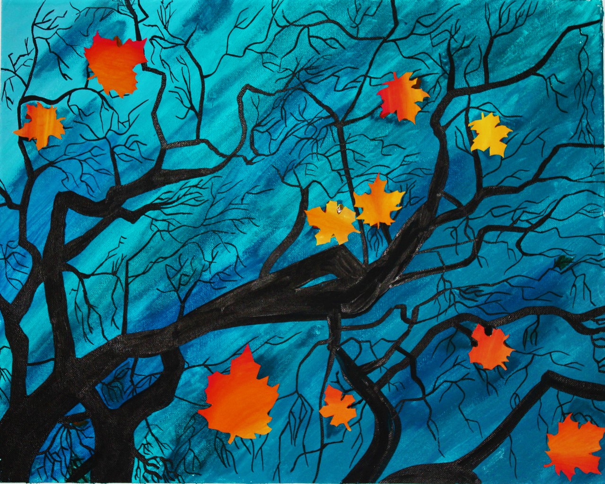

I'm an interaction design student who likes to draw, look at drawings, make app designs, and read. Occasionally, I enjoy making websites using CSS, like this one.
As you may have noticed, I mostly work in blacks and whites and love minimalist and classic designs.